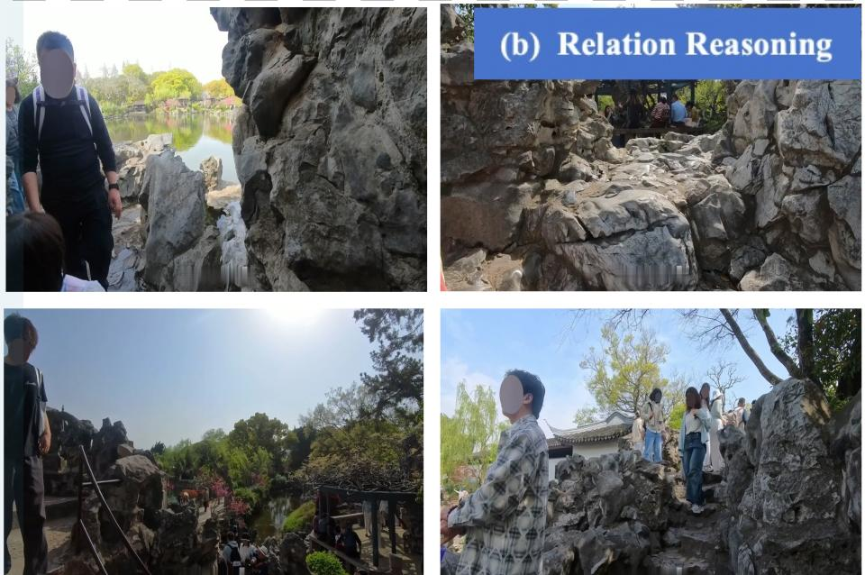
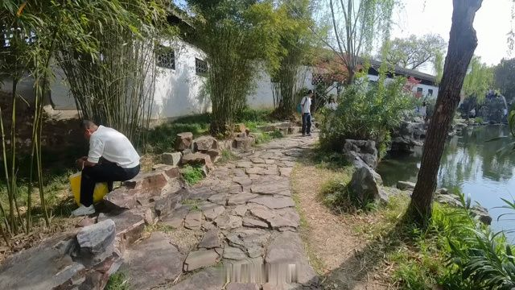
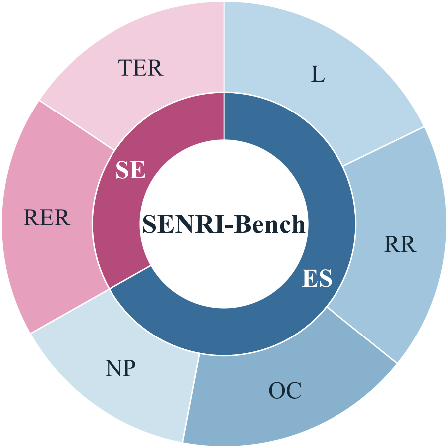
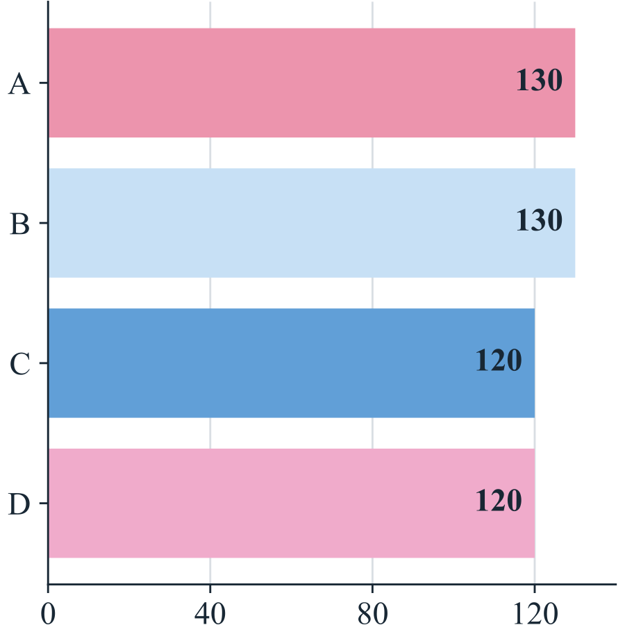
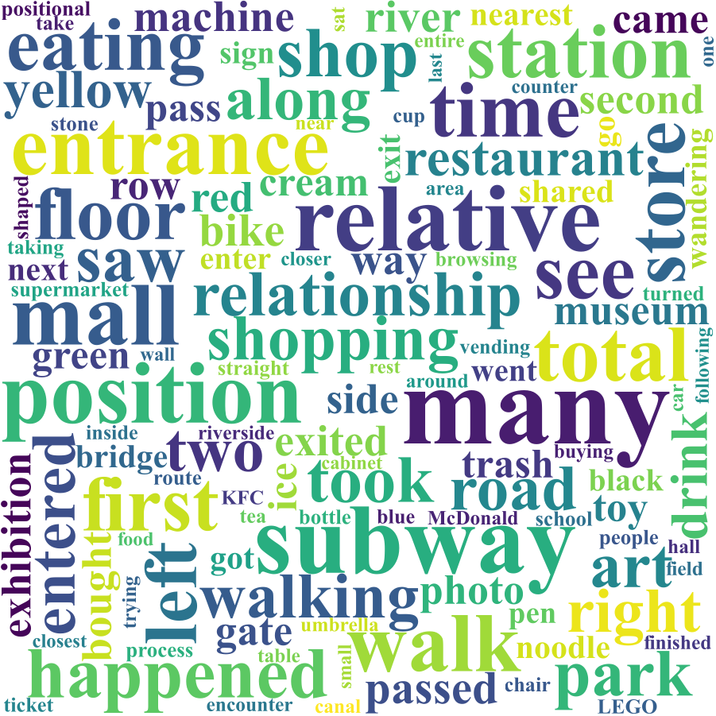
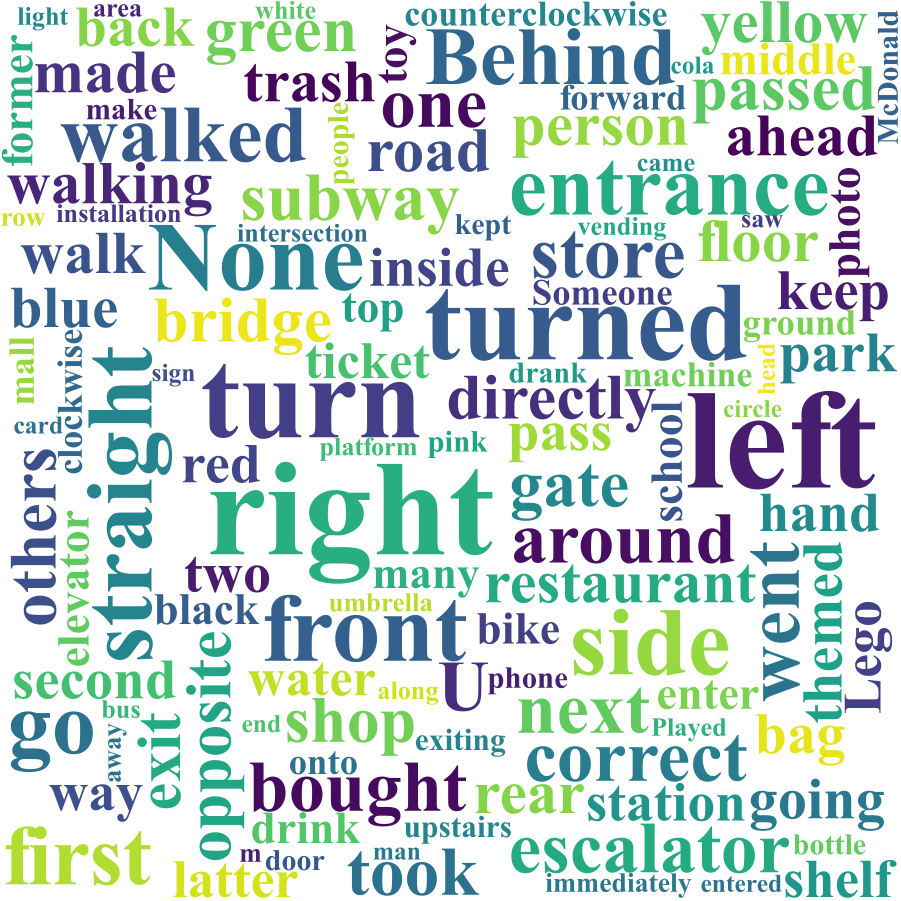
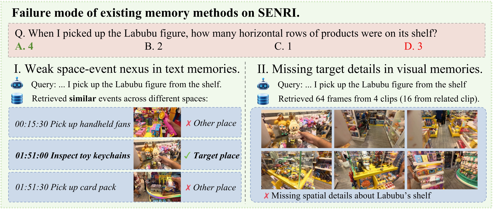
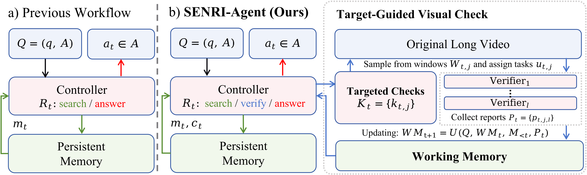

Evidence frames from the original video, in temporal order.
“Memories are motionless, and the more securely they are fixed in space, the sounder they are.”Gaston Bachelard, The Poetics of Space
1Fudan University · 2Alaya Lab · †corresponding
00 — Abstract
Human memories are organized in a way that connects events with their corresponding spatial contexts. An AI assistant should also be able to memorize and recall the nexus of events and spaces. Thus we introduce SENRI, a task that studies this space–event connection in long, continuous real-life egocentric video. It contains six task types in two directions: Event → Space, which recovers spatial knowledge from event cues, and Space → Event, which retrieves events from regions and trajectories. To evaluate this, we build SENRI-Bench, containing 500 manually annotated multiple-choice questions over 10 uninterrupted self-recorded videos with around 25.3 hours of content. Also, we evaluate three typical long video understanding paradigms: direct perception, evidence seeking, and persistent memory. The task remains challenging across all three paradigms, highlighting substantial room for improvement.
Then we show two representative failure modes of existing memory methods and address these evidence gaps with SENRI-Agent, a controller that uses Target-Guided Visual Check (TGVC) to propose local visual check tasks for parallel verifiers and integrate the reports into a working memory to help with reasoning. Built upon existing memory systems, SENRI-Agent improves the performance of existing baselines without modifying their stored memories. We hope SENRI will provide valuable insights into how real-life egocentric understanding should be evaluated, reveal the gaps in existing approaches, and offer a possible direction for improvement.
01 — Ten videos, uncut
Each video in SENRI-Bench is one uninterrupted take from a chest-mounted camera, about two and a half hours long. Nothing is cut away: the walk from the park to the subway, the escalator between floors and the street outside the restaurant all stay in the footage. Below is the contact sheet for each video, with twenty frames per take.

VIDEO 01 · FR 01/20
Faces and scene text are blurred.
Six questions about Video 01
Pick an answer to reveal the correct one. The frames above are sampled across the whole video, not the evidence for these questions.
02 — The question
We remember an afternoon by tying what happened to where it happened. SENRI asks a model to do the same, in two directions. Event → Space starts from something that happened and recovers its spatial context. Space → Event starts from a place or a route and asks what happened there. Each question has four options, and the person who recorded the video wrote it.
Event → Space334 questions
Space → Event166 questions

Evidence frames from the original video, in temporal order.
03 — SENRI-Bench
Ten videos recorded in malls, museums, restaurants, parks, campuses, streets and public transit, with nothing cut. The transitions between places stay in the video.
All footage was collected outside public video repositories, so the evaluated models are unlikely to have seen it during pretraining.
The person who recorded each video wrote its 50 questions, each with three challenging distractors. An independent verifier checked every question against the full video.
| Benchmark | Anno. | Self-recorded | One-take | Real-life | Cross-scene | Event-grounded | Spatial reasoning | Avg. h / clip |
|---|
Anno.: A = automatic, M = manual, A/M = mixed pipeline.




04 — Results
We evaluate 28 configurations across three paradigms: direct perception over sampled frames, evidence seeking agents that search the video with tools, and persistent memory systems that build memories first and reason over them afterwards.
Best overall, from VideoARM with Gemini 3.7 Flash. No baseline reaches 60%.
configurations do worse on Event → Space than on Space → Event. Where is the harder question.
points come from swapping only the inference model while keeping the same memories.
Accuracy on SENRI-Bench
| Paradigm | Method | Inference model | Overall | E → S | S → E |
|---|
* Backbone further fine-tuned or post-trained by the method.
05 — Why memory fails
Suppose the question is how many rows the shelf had where I picked up the Labubu figure. A system has to link that event to one particular shelf. Existing memory systems find the right moment but miss the detail that decides the answer.

Retrieval finds plausible moments of picking something up, but two of them happened elsewhere and the third carries no spatial detail.
The retrieved frames show the right store and even the moment itself, but they are sampled too sparsely to show the shelf’s structure.
06 — SENRI-Agent
SENRI-Agent adds a verify action to the usual search-and-answer loop. Target-Guided Visual Check turns retrieved memories into precise checks over short windows of the original video: which occurrence to look at, and which visual fact to confirm. Parallel verifiers report only what they can see. A bounded working memory keeps the useful reports, with their evidence frames, for the next round.

Same memories, better answers
Overall accuracy (%), with stored memories and retrieval unchanged.
Every part matters
Ablation on MAGIC-Video with Qwen3.8-27B.
| Variant | Overall | Δ |
|---|---|---|
| SENRI-Agent | 47.8 | – |
| w/o target guidance | 45.0 | −2.8 |
| w/o parallel verifiers | 45.0 | −2.8 |
| w/o working memory | 44.0 | −3.8 |
Citation
@article{lan2026senri,
title = {SENRI: Understanding the Space--Event Nexus in Real-Life Videos},
author = {Lan, Kehan and Ying, Kaining and Ding, Henghui and Zhang, Kaipeng},
journal = {arXiv preprint},
year = {2026}
}